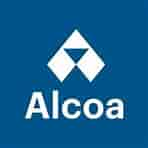
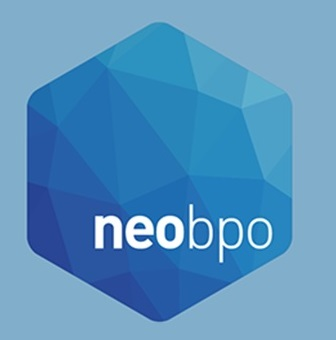

Experiências



Apesar de experiências anteriores como estágio e trabalho técnico em um provedor de internet,
considero o início de minha carreira no ano em que entrei na faculdade e tive a oportunidade de trabalhar
na ALCOA ALUMÍNIO SA, uma multinacional como prestador de serviços terceirizado pela HARD NET INFORMÁTICA.
Usando Excel, VBA e as vezes SQL e outras ferramentas Microsoft (Outlook, Power BI, Power Apps e SharePoint),
nossa equipe era responsável por automatizar tarefas manuais. Fui um dos responsáveis pelos projetos do departamento
financeiro onde conseguimos um saving de mais de 150hs/mês em dois anos.
Fui efetivado como Auxiliar Administrativo mas depois de 2 anos a BU que eu atuava deixou de existir, voltei para a Alcoa como
terceiro novamente: agora pela NEO BPO. Dessa vez, pela XP anterior,
tive a oportunidade de liderar uma equipe com 8 devs. Implementamos um backlog de projetos, metodologia ágil e KPIs
para organizar a nossa própria área e tivemos sucesso ao mostrar mais transparência para os gestores do nosso cliente.
Novamente fui efetivado e dessa vez fiquei 2 anos como Analista de Comércio Exterior Jr. Inicialmente teria um
escopo de desenvolvedor e conseguimos fazer alguns projetos (FollowUp de Importação e Formulário para Pagamentos) além
de ter atuado como Product Owner no Follow Up de Exportação, porém depois de algumas mudanças na área, uma pandemia apareceu
e as atividades da área tomaram o tempo que era para desenvolvimento. Assim atuei operacionalmente nos processos de exportação
da planta de "Químicos" mas o ciclo chegou ao fim para que eu possa voltar a trabalhar como DEV.